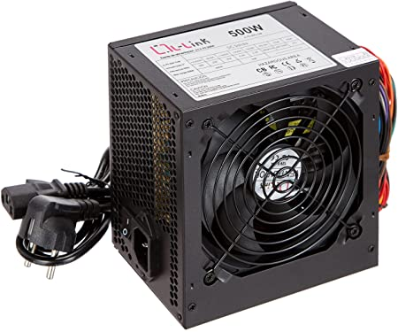

Una fuente de alimentación es el equipo que se encarga de transformar la corriente alterna (AC), que es la corriente que proviene directamente de la línea eléctrica, en corriente continua (DC), que es la que necesitan la mayoría de los dispositivos para funcionar correctamente.
